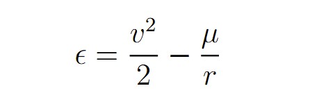
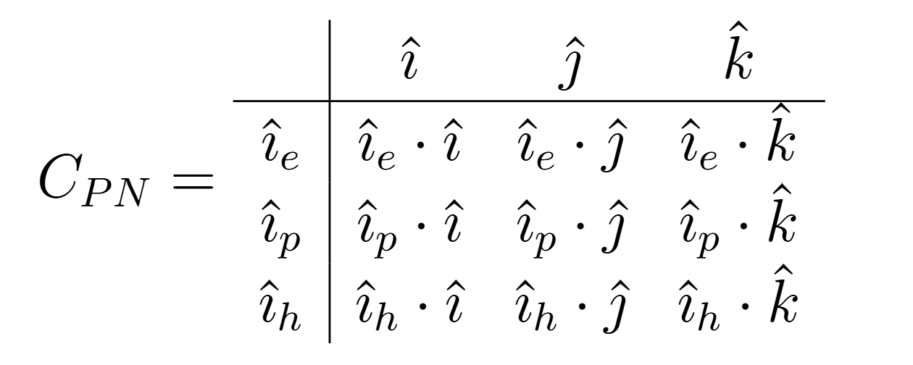
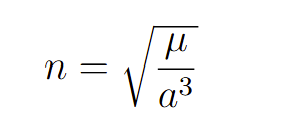
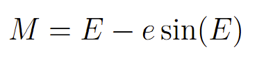
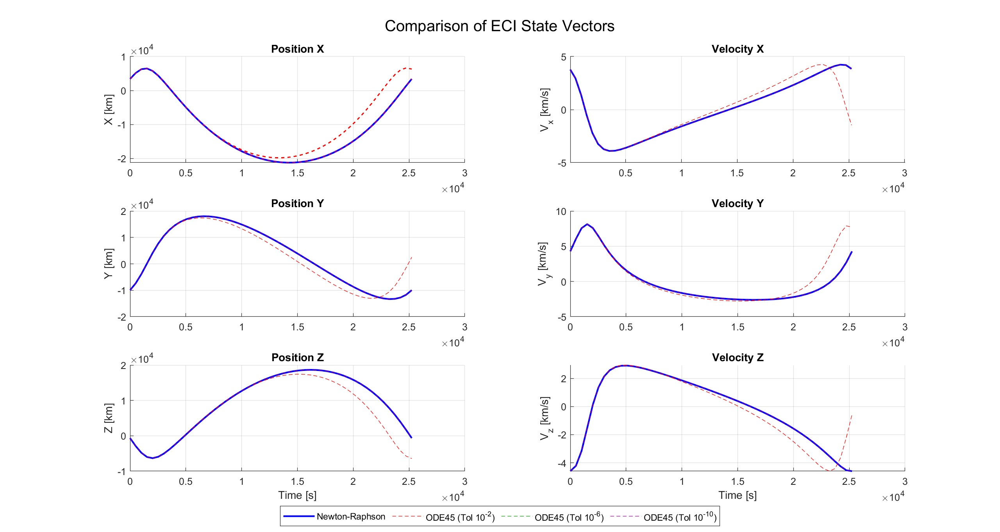
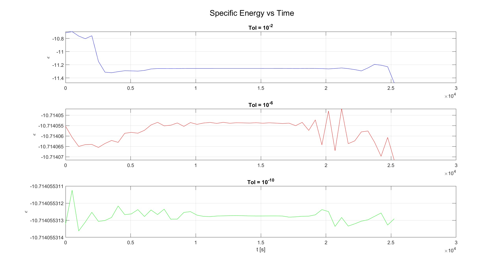
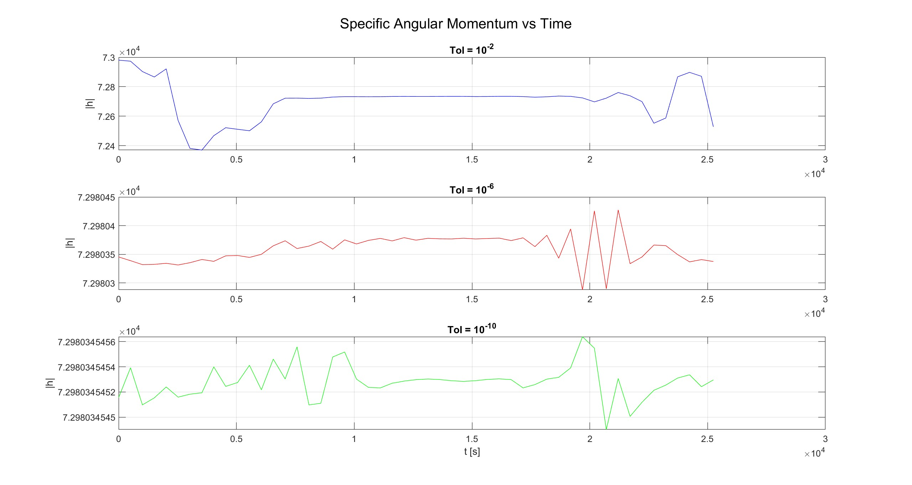
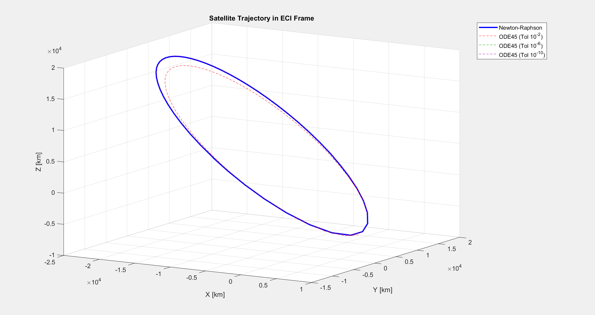

The numerical integration using ODE45 with a loose tolerance of 10-2 (red dashed solution) begins to noticeably diverge from the analytical Newton–Raphson Kepler solution as time progresses. This deviation grows gradually at first, but becomes increasingly pronounced, resulting in significant error accumulation toward the end of the simulation. This behavior is caused by the nature of adaptive numerical integration methods such as ODE45, which approximate the solution by truncating higher-order terms at each time step. When a relatively large tolerance is specified, these local truncation errors are permitted to be larger, which reduces computational cost but decreases long-term accuracy. Because orbital motion is a strongly nonlinear dynamical system, these small local errors do not cancel out. Instead, they compound over time, leading to exponential growth in the global error rather than a linear drift. By approximately 2.5 × 104 seconds, the accumulated numerical error becomes dominant,causing a pronounced and unphysical divergence in both the position and velocity state vectors relative to the analytical solution. This highlights the sensitivity of long-term orbital propagation to solver tolerance and numerical stability.


The variations observed in the Specific Energy vs. Time and
Specific Angular Momentum vs. Time plots are primarily caused by the accumulation
of numerical error inherent to the ode45 variable-step integrator. When a loose
tolerance of 10-2 is used, the integrator permits larger truncation
errors at each time step, producing noticeable numerical drift and sharp oscillations in both
conserved quantities. As the tolerance is tightened to
10-6 and further to
10-10, these variations decrease dramatically, and the quantities
remain nearly constant throughout the propagation. Although the plots corresponding to the tighter
tolerances may still appear slightly jagged, the y-axis scales reveal that these fluctuations are
confined to extremely small ranges on the order of 10-5 and
10-9, respectively. This demonstrates
that the remaining deviations are negligible and primarily the result of finite numerical precision
rather than physical inaccuracies in the orbital model itself. Monitoring specific energy and specific
angular momentum provides an effective validation and health-checking method for orbital simulations
because both are fundamental conserved quantities in the ideal two-body problem governed by Newtonian
gravity. In an analytical solution, these values should remain perfectly constant over time, which
would appear as perfectly flat horizontal lines on the plots. However, numerical integrators such as
ode45 approximate the solution step-by-step rather than solving the governing equations
analytically, meaning small numerical deviations are unavoidable. Because the underlying physics
requires exact conservation, any departure from the ideal constant value acts as a direct and
quantifiable measure of numerical error. The fact that these deviations systematically decrease and
converge toward a nearly flat baseline as the solver tolerance is reduced confirms that the simulation
is mathematically consistent and converging toward the true physical solution.

Based on the 3D trajectory plot, the numerical integration using ODE45 with a loose tolerance of 10-2 (red dashed trajectory) physically drifts and shrinks inward relative to the analytical Keplerian orbit (blue solid trajectory). The periapsis, or point closest to Earth, is located near the bottom-right portion of the ellipse where the trajectory approaches approximately Z = -0.5 × 104 km and X = 0.5 × 104 km, while the apoapsis, or furthest point from Earth, occurs near the upper-left region where the orbit reaches approximately Z = 2 × 104 km and X = -2 × 104 km. The structural error becomes most visually apparent at the apoapsis because global truncation errors accumulate throughout the propagation. As the satellite passes through the high-velocity periapsis region, the loose solver tolerance permits excessively large adaptive time steps, causing ODE45 to inaccurately resolve the steep gravitational gradients and artificially lose orbital energy. This accumulated numerical error compounds over time, so by the time the spacecraft reaches apoapsis, the propagated trajectory significantly undershoots the true analytical orbit, producing the large geometric separation visible in the upper-left section of the plot.